github-aquarium-editorial-status-panel
Working copy: not the live site.
No note from L3 yet. The AI working on this pet program writes here how the site is coming along.
More details
- How it works
- L3’s note to you on how GitHub Aquarium’s site is coming along. It shows only on the working copy, so you can tell it from the live site.
- Where it comes from
editorialin pets.json (what it says, who wrote it, when), written by the AI working on this pet program.- Your rules
- 2026-10-23: first on the page, full width, L3 talking to you about this site; 2026-11-02: only on the working copy (PET-PROGRAM-FRAMEWORK.md, section 3, item 0).
- Not built yet
- The seated agent writing it by itself: today a chat writes it in pets.json on a branch.
github-goldfish-cyberhome-panel

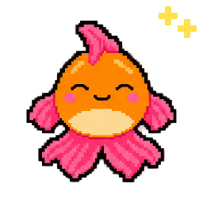
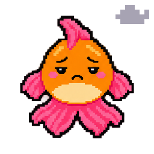


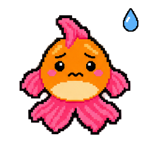
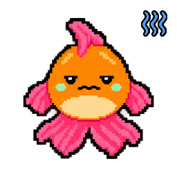

GitHub Aquarium v0.2.0 // 20261007
github-aquarium-quick-summary-panel
Swims through every public word on a GitHub account and flags document-control, blatant, organizational and systemic errors.
github-goldfish-intelligence-levels-panel
on off checked, works report issues update waiting for your OK not created
github-goldfish-L1-control-panel
3rd party programs · 2
- GitHubHosts the code: every repo, pull request and handoff card, and runs the Farmer's daily round.
outstanding-items reads every repo the farm owner owns through GitHub's API, with the PC's own sign-in, and changes nothing there: queries only, never a mutation.
works today · its own page is not linked on the System Map yet
- Node.jsRuns JavaScript outside the browser: the hub's build and tests.
outstanding-items runs with Node 20 or newer, its built-in modules only.
works today · its own page is not linked on the System Map yet
Native programs · 1
- Pets BoardEverything that waits on you on GitHub, in the order to act, and every pet in one chart.
GitHub Aquarium opens its Pets Board, the full list of what waits on you on GitHub (the Open button in its outstanding-items tool panel).
works today · its own page is not linked on the System Map yet
Native tools · 18
Looking for the Goldfish's list on this PC.
Nothing is failing on a main branch.
Nothing is waiting on you.
No chat has anything to fix.
Nothing has gone stale.
Nothing is being checked.
Looking for the Goldfish's branch list on this PC.
More details
branch-sweeper (github-aquarium-v1.0-branch-sweeper-v1.0) sorts every branch on every repo the farm owner owns. Safe to delete: all its work is already on the main branch, or its pull request was merged and nothing was added after, so deleting it loses nothing. Ask Astra: it may hold the only copy of some work (closed without merging, more added after a merge, or old work with no pull request). Keep: first the branches on your keep list, each with your reason, then the main branch, publishing, release and protected branches, open pull requests, branches an open handoff card names, and anything worked on in the last week. Checking changes nothing: npm run branch-sweeper -- --plan in the hub folder. Deleting happens only from that plan, only the rows marked to delete, only with your OK (--apply <plan> --yes), and each branch goes into an undo log on this PC first, so --undo puts it back. A branch you decided to keep goes on the keep list (branch-sweeper-keep-20261117.json, next to the plans on this PC): it is never offered for deleting again, even after its repo is renamed, and --apply refuses it even in an older plan and does not run without the list. The lists name private repos, so they stay on this PC; anywhere else this tool shows made-up examples.
Open the Pets Board the full list, in the order to act (skills/merge-order), and every pet in one chart
More details
outstanding-items (github-aquarium-v1.0-outstanding-items-v1.0) fills these five tools. It reads every repo the farm owner owns on GitHub, read only: pull requests ready for your OK, conflicts and failing checks, jobs failing on a main branch, handoff cards that wait on you, branches with work and no pull request, and pull requests nobody has touched for a month. It runs when asked: npm run outstanding-items in the hub folder, or a chat runs it before it gives you a merge chart. The list names private repos, so it stays on this PC and fills these tools only when the page is opened there. Anywhere else they show made-up examples.
- project-image-generatorfinds the best pictures already in every public repo, optionally screenshots each live site with a browser already on the PC, writes one manifest and reports Flash Audit A55. Read only on GitHub; Portfolio Puffer uses it by grant.
github-aquarium-v1.0-project-image-generator-v1.0A tool of GitHub Aquarium (GitHub Goldfish, 2026-10-17): finds the best pictures already in every public repo, optionally screenshots each live site with a browser already on the PC, writes one manifest and reports Flash Audit A55. Read only on GitHub; Portfolio Puffer uses it by grant (github-goldfish scripts/project-image-generator-20261017.mjs).
works today · its own page is not linked on the System Map yet
- naming-correctionsremembers the naming corrections the owner asks for, one repo at a time (repo, mistaken name, preferred name), and flags the mistaken name in later audits. Rules stay in the browser or a private file outside Git, never in the repo.
github-aquarium-v1.0-naming-corrections-v1.0A tool of GitHub Aquarium (GitHub Goldfish, 2026-10-08): remembers the naming corrections the owner asks for, one repo at a time (repo, mistaken name, preferred name), and flags the mistaken name in later audits. Rules stay in the browser or a private file outside Git, never in the repo (github-goldfish index.html, Remember correction).
works today · its own page is not linked on the System Map yet
- never-say-checkerthe owner’s own list of words that must never appear in public text; the Blatant check flags each one it finds. The list stays in the browser.
github-aquarium-v1.0-never-say-checker-v1.0A tool of GitHub Aquarium (GitHub Goldfish, 2026-10-07): the owner’s own list of words that must never appear in public text; the Blatant check flags each one it finds. The list stays in the browser (github-goldfish index.html).
works today · its own page is not linked on the System Map yet
- report-exportercopies the current audit report or downloads it as Markdown, to paste into a chat or a handoff card.
github-aquarium-v1.0-report-exporter-v1.0A tool of GitHub Aquarium (GitHub Goldfish, 2026-10-07): copies the current audit report or downloads it as Markdown, to paste into a chat or a handoff card (github-goldfish index.html, Copy and Download).
works today · its own page is not linked on the System Map yet
- achievement-tracker"it helps me track my GitHub achievements, lists suggestions on how to get the rest in order of easiest next"): estimates GitHub achievements from public GitHub data, ranks the easiest next ones, lets the owner set what the profile really shows, and offers Start Project ideas for her cyber security, AI and nomad course tracks. Built on github-goldfish branch claude/achievements-20261017, not merged yet.
github-aquarium-v1.0-achievement-tracker-v1.0A tool of GitHub Aquarium (Astra, 2026-10-17: "it helps me track my GitHub achievements, lists suggestions on how to get the rest in order of easiest next"): estimates GitHub achievements from public GitHub data, ranks the easiest next ones, lets the owner set what the profile really shows, and offers Start Project ideas for her cyber security, AI and nomad course tracks. Built on github-goldfish branch claude/achievements-20261017, not merged yet.
planned · its own page is not linked on the System Map yet
- findastra-readme-auditoraudits and revises the owner’s GitHub profile README with a local maker and checker, then waits for her review before it pushes a branch. Built on github-goldfish codex branches, not merged yet.
github-aquarium-v1.0-findastra-readme-auditor-v1.0A tool of GitHub Aquarium (Codex, 2026-10-15): audits and revises the owner’s GitHub profile README with a local maker and checker, then waits for her review before it pushes a branch. Built on github-goldfish codex branches, not merged yet.
planned · its own page is not linked on the System Map yet
- document-control-checkerthe Document control check. Finds required files that are missing, malformed or uncontrolled: no README or LICENSE, a pet repo without pet.json, the pet-app topic or the credit line, a committed .env, stray copies such as "... (1).txt". Read only.
github-aquarium-v1.0-document-control-checker-v1.0A tool of GitHub Aquarium (GitHub Goldfish, 2026-10-07): the Document control check. Finds required files that are missing, malformed or uncontrolled: no README or LICENSE, a pet repo without pet.json, the pet-app topic or the credit line, a committed .env, stray copies such as "... (1).txt". Read only (github-goldfish index.html).
works today · its own page is not linked on the System Map yet
- blatant-checkerthe Blatant check. Finds plain errors a visitor can see: links to repos, files or #anchors that go nowhere, doubled words, typos, garbled characters, leftover TODOs, a token or personal folder path in public text, and any word on the never-say list. Read only.
github-aquarium-v1.0-blatant-checker-v1.0A tool of GitHub Aquarium (GitHub Goldfish, 2026-10-07): the Blatant check. Finds plain errors a visitor can see: links to repos, files or #anchors that go nowhere, doubled words, typos, garbled characters, leftover TODOs, a token or personal folder path in public text, and any word on the never-say list. Read only (github-goldfish index.html).
works today · its own page is not linked on the System Map yet
- organizational-checkerthe Organizational check. Finds things in the wrong place or named off-pattern: default branch not main, "Moved:" stubs not archived, no topics, a README title that does not echo the repo name, a profile line that disagrees with the repo's description, old pet words. Read only.
github-aquarium-v1.0-organizational-checker-v1.0A tool of GitHub Aquarium (GitHub Goldfish, 2026-10-07): the Organizational check. Finds things in the wrong place or named off-pattern: default branch not main, "Moved:" stubs not archived, no topics, a README title that does not echo the repo name, a profile line that disagrees with the repo's description, old pet words. Read only (github-goldfish index.html).
works today · its own page is not linked on the System Map yet
- systemic-checkerthe Systemic check. Finds patterns across the whole account: mixed apostrophes and dashes, mixed description style, some repos licensed and some not, a pet missing from the registry. Read only.
github-aquarium-v1.0-systemic-checker-v1.0A tool of GitHub Aquarium (GitHub Goldfish, 2026-10-07): the Systemic check. Finds patterns across the whole account: mixed apostrophes and dashes, mixed description style, some repos licensed and some not, a pet missing from the registry. Read only (github-goldfish index.html).
works today · its own page is not linked on the System Map yet
- showcase-checkerthe Showcase check and panel. For every project the profile README advertises, it names its kind (VRChat world, Unity asset library, Discord project, website, pet …) and checks the README shows what that kind should: for a world, what's in it, how to visit, what's being built now and what's missing; plus the last commits and open pull requests. The homepage is the shop window, each README is what's on the shelf. Read only. In github-goldfish index.html.
github-aquarium-v1.0-showcase-checker-v1.0A tool of GitHub Aquarium (GitHub Goldfish, 2026-10-19, at Astra's request): the Showcase check and panel. For every project the profile README advertises, it names its kind (VRChat world, Unity asset library, Discord project, website, pet …) and checks the README shows what that kind should: for a world, what's in it, how to visit, what's being built now and what's missing; plus the last commits and open pull requests. The homepage is the shop window, each README is what's on the shelf. Read only. In github-goldfish index.html (PR #19, merged 2026-10-19).
works today · its own page is not linked on the System Map yet
- outstanding-items"Can we get the GitHub goldfish to check the outstanding items on GitHub?", then all recommended, github-goldfish card 006): what waits on the farm owner on GitHub, from every repo they own, read only and sorted by the merge-order rank: jobs failing on a main branch, pull requests ready for her OK, handoff cards that wait on her, conflicts, failing checks and stacked pull requests for their chats, branches with work and no pull request, and pull requests nobody has touched for a month (close?). It runs when asked (npm run outstanding-items, or a chat before a merge chart) and writes the list for this page's panel and the Pets Board on her PC only, because it names private repos. The Pets Board's GitHub reading moved here.
github-aquarium-v1.0-outstanding-items-v1.0A tool of GitHub Aquarium (Astra, 2026-10-21: "Can we get the GitHub goldfish to check the outstanding items on GitHub?", then all recommended, github-goldfish card 006): what waits on the farm owner on GitHub, from every repo they own, read only and sorted by the merge-order rank: jobs failing on a main branch, pull requests ready for her OK, handoff cards that wait on her, conflicts, failing checks and stacked pull requests for their chats, branches with work and no pull request, and pull requests nobody has touched for a month (close?). It runs when asked (npm run outstanding-items, or a chat before a merge chart) and writes the list for this page's panel and the Pets Board on her PC only, because it names private repos. The Pets Board's GitHub reading moved here (scripts/outstanding-items-20261021.mjs).
works today · its own page is not linked on the System Map yet
More details
- How it works
- Click a name to open it. Click a light to change it: a bubble says what it means. Something not built yet is off and its second light grey (not created); the second light says report issues until someone checks the item, and blue once it was checked and works.
- Where it comes from
- The System Map’s programs and tools for GitHub Aquarium, github-goldfish’s pet.json tools, and the checks recorded in pets.json. ON/OFF and maintenance are saved in this browser only.
- Your rules
- 2026-10-21: 3rd party programs, native programs and native tools are L1, each heading with its count, pills three to a row; 2026-11-02: a pet’s own tools are tool boxes here, no special panels (PET-PROGRAM-FRAMEWORK.md, section 3, item 4).
- Not built yet
- The core enforcing ON/OFF and maintenance (PET-PROGRAM-FRAMEWORK.md, section 4); an audit that compares these tools with the files in the repo.
github-goldfish-L2-control-panel
Native tricks · 5
- self-audit weeklyGitHub Goldfish's audit: the findastra GitHub account. Today the Friendly Farmer's round checks only GitHub Aquarium's repo files and the cards that wait on you.
works today · its own page is not linked on the System Map yet
- play-withNumbered steps the seated agent walks you through in GitHub Goldfish's chat, to play with GitHub Aquarium: what it does, tried out together. Planned: off until L3 can run it in the chat.
github-aquarium-v1.0-play-with-trick-v1.0planned · its own page is not linked on the System Map yet
- care-forNumbered steps the seated agent walks you through in GitHub Goldfish's chat, to look after GitHub Aquarium: its checks, updates and fixes. Planned: off until L3 can run it in the chat.
github-aquarium-v1.0-care-for-trick-v1.0planned · its own page is not linked on the System Map yet
- branch-sweep-round weeklyOnce a week: lists the branches that are safe to delete and deletes only the ones you okay.
github-aquarium-v1.0-branch-sweep-round-trick-v1.0A trick of GitHub Aquarium (Astra, 2026-11-20: "they need to be, this was the whole point of the tricks part of Astra's PetOS"): once a week, run the branch-sweeper tool, show Astra the new branches that are safe to delete and the ones to ask about, and delete only the rows she okays, with the undo. Branches on her keep list are never offered. Not scheduled yet.
planned · its own page is not linked on the System Map yet
- red-jobsA trick of GitHub Aquarium (github-goldfish skills/red-jobs/SKILL.md; Astra, 2026-10-22, sharing paper-girl’s Actions page: "add a skill to the goldfish that corresponds to this"): read a GitHub Actions job that fails on a main branch, name its cause from the causes seen so far (a private repo’s Pages, a private checkout, a changed input, a failing test, a workflow file), and hand Astra the one next step with its link: her own click, a chat’s fix or a slide deck. Read only; it never switches a workflow, reruns a job or changes a repo. Uses only outstanding-items.
github-aquarium-v1.0-red-jobs-trick-v1.0works today · its own page is not linked on the System Map yet
More details
- How it works
- GitHub Aquarium’s own tricks: written steps its AI follows, each with how often it runs. Play with and Care for are on every pet program, off until L3 can run them in the chat.
- Where it comes from
- The System Map’s tricks for GitHub Aquarium, the self-audit from pets.json, and Skill Scout’s list.
- Your rules
- 2026-10-21: a trick is a way of using the pet’s programs, tools and tricks, owned at L2 and followed at L3; 2026-10-22: anything on a schedule is a trick with how often it runs; 2026-11-03: play-with and care-for on every page (PET-PROGRAM-FRAMEWORK.md, section 3, item 4).
- Not built yet
- Play with and Care for, run by L3 in the chat; Skill Scout keeping every trick and where it came from.
github-goldfish-L3-control-panel
L3 asks you · 0
Nothing to ask you about GitHub Aquarium right now.
Suggestions for you · 1
- weekly-suggestions weeklyOnce a week the seated agent suggests what to do next for GitHub Aquarium.
planned · its own page is not linked on the System Map yet
Seat · 0
- seatEmpty: no farmhand is seated in GitHub Aquarium (L3 is not connected).
A farmhand is an AI agent seated here to talk with you about this pet program.
More details
- How it works
- Only L3 talking with you about GitHub Aquarium: what L3 asks you (with the yellow light), its suggestions, and who is seated.
- Where it comes from
- The update audit’s questions in pets.json; the seat, from the pet chat helper on this PC, is shown in the chat.
- Your rules
- 2026-10-24: L3’s panel is about L3 to L4 discussions on this pet program only, in sections of pills; 2026-11-03: the editorial status panel is L3’s note to you, no activity bubble (Flash Audit A52) (PET-PROGRAM-FRAMEWORK.md, section 3, item 4).
- Not built yet
- Weekly suggestions; this seat pill showing who the pet chat helper seated.
github-goldfish-L4-control-panel
Nothing from the Friendly Farmer's last merged round.
Grants are permissions: what each level may read (R), write (W) and run (X) on GitHub Aquarium. They are listed in github-goldfish-rwx-panel, below, with whether each one is in code.
No agent keys yet: Iron Gates will issue them and API Fairy will show them (planned).
- Nothing yellow or orange.
- Microchip
- not signed yet
- Pedigree
- findastra/github-goldfish (private), added 2026-10-07
- App
- the app it had before
- Stamps
- Data
- yours, in this browser only
- Last entry
- none yet
- Updated
- page spawned 20261018; version 0.2.0-20261008 (from github-goldfish's pet.json)
- Seat
- empty
- Last check
- 2026-10-20: “New work since my last check.”
- On the map
- program-2
- Vaccination card
- no security patches recorded
- Vet records
- vet-clinic tickets (private repo)
More details
- How it works
- Your part, the verified human: approvals waiting on you, grants, keys, required maintenance and the Pet ID, each a tool box that folds to its name.
- Where it comes from
- The Friendly Farmer’s last merged round and the pet’s own approvals in pets.json (each names its hub card), the grants on the R W X panel, the lights you marked in this browser, and the pet’s repo and versions.
- Your rules
- 2026-10-22: five tool boxes with lowercase names; 2026-10-24: round boxes, the update history in the Pet ID’s stamps; Pet ID, not passport (PET-PROGRAM-FRAMEWORK.md, section 3, item 4).
- Not built yet
- Approve and decline buttons and agent keys (Iron Gates, shown by API Fairy); the microchip signature; security patches.
More details
- How it works
- The four levels stacked, L1 at the top: programs and tools (L1), the pet program’s own tricks (L2), the AI in the seat (L3) and you (L4). The key above says what each light means; a level’s panel glows while it is working.
- Where it comes from
- The System Map, pets.json and each pet’s pet.json, and the Friendly Farmer’s rounds; the lights you set are saved in this browser.
- Your rules
- 2026-10-18: four stacked panels, lights are buttons; 2026-10-23: only tools have lights; 2026-10-24 and 2026-10-26: blue checked, orange report issues or not checked, yellow update waiting, grey not created (PET-PROGRAM-FRAMEWORK.md, section 3, item 4).
- Not built yet
- L1, L2 and L3 glowing while they work (Startup Star’s link); the core enforcing the lights.
github-goldfish-rwx-panel
Should be: what each level may read (R), write (W) and run (X) on GitHub Aquarium. Then whether that is in code:
✓ In code A test, setting or script makes it true, and the grant names that proof (its evidence).⚠︎ Rule only A rule agents agree to follow (AGENTS.md or a skill). Nothing stops someone who breaks it.○ Not built Designed, not built yet.
Who may use GitHub Aquarium
L1Should beRWXa program or tool · its own folder⚠︎ Rule only
RWXItself: its own repo folder and its declared data folder⚠︎ Rule only
Written only: farm-security, section 2. Hub scripts refuse a path outside the pet's folder (scripts/animal-guard-20261013.mjs), but a pet's own program runs as you, so it could reach further.
Next (planned): The Police Station watches every write and every key use.
L1Should beRWXa program or tool · everything else⚠︎ Rule only
RWXKernel Koala (Kernel Grove: process-sweep, service-host-explainer, leftover-watch)⚠︎ Rule only
Written only: Kernel Grove reads through WMI, the IP Helper API and the registry, and writes only its own data folder (its farm event log, saved reports without command lines, its menu and mood files). Nothing enforces this: it runs as you. Asked for on 2026-10-21; Astra approves it by merging.
Next (planned): Iron Gates issues the grant; The Police Station watches that Kernel Grove writes only its own folder.
RWXInference Iguana (Benchmark Rock: gpu-watch, busy-watch)⚠︎ Rule only
Written only: Benchmark Rock reads Windows' GPU performance counters and DXGI, and writes only its own data folder (its farm event log, saved reports with names and numbers only, its menu and mood files); it never stops or changes a program, a driver or a card setting. Nothing enforces this: it runs as you. Asked for on 2026-10-23; Astra approves it by merging.
Next (planned): Iron Gates issues the grant; The Police Station watches that Benchmark Rock writes only its own folder.
RWXLog Lynx (Log Den: crash-catcher, windows-log-reader, heartbeat-checker)⚠︎ Rule only
Written only: Log Den’s own code only reads, and on a .NET crash window presses Details and nothing else (log-den-20261018.cs). It writes only its own data folder. Nothing enforces this: it runs as you. Asked for on 2026-10-18; Astra approves it by merging.
Next (planned): Iron Gates issues the grant; The Police Station watches that Log Den writes only its own folder.
RWXGitHub Goldfish (GitHub Aquarium: branch-sweeper)⚠︎ Rule only
Written only: scripts/branch-sweeper-20261114.mjs checks read only; it deletes only rows a plan marks, never a "keep" row or a branch on Astra's keep list (a file on her PC, matched by the repo's name or its number on GitHub; --apply does not run without it, and a list it cannot read stops it), at most 200 at once, only with --yes while signed in as the farm owner (animal-guard), after checking each branch again (same commit, still not keep), and writes the undo line before each delete (test/branch-sweeper-test-20261114.mjs). Nothing stops someone who runs other code with the same token. Asked for on 2026-11-14; Astra approves it by merging.
Next (planned): Iron Gates issues a token that can only delete branches (a fine-grained token with contents write on the farm's repos), and The Police Station watches the deletes.
RWXForensic Ferret (Evidence Locker: evidence-collector)⚠︎ Rule only
Written only: evidence-locker-20261018.cs reads and copies into its own cases folder only; it never changes or deletes what it investigates. Nothing enforces this: it runs as you. Asked for on 2026-10-18; Astra approves it by merging.
Next (planned): Iron Gates issues the grant; Cipher Owl signs each case so a rewritten case shows.
L2Should beRWXa pet program · its own folder⚠︎ Rule only
RWXItself: its own repo folder and its declared data folder⚠︎ Rule only
Written only: farm-security, section 2. Hub scripts refuse a path outside the pet's folder (scripts/animal-guard-20261013.mjs), but a pet's own program runs as you, so it could reach further.
Next (planned): The Police Station watches every write and every key use.
L2Should beRWXa pet program · everything else⚠︎ Rule only
RWXKernel Koala (Kernel Grove: process-sweep, service-host-explainer, leftover-watch)⚠︎ Rule only
Written only: Kernel Grove reads through WMI, the IP Helper API and the registry, and writes only its own data folder (its farm event log, saved reports without command lines, its menu and mood files). Nothing enforces this: it runs as you. Asked for on 2026-10-21; Astra approves it by merging.
Next (planned): Iron Gates issues the grant; The Police Station watches that Kernel Grove writes only its own folder.
RWXInference Iguana (Benchmark Rock: gpu-watch, busy-watch)⚠︎ Rule only
Written only: Benchmark Rock reads Windows' GPU performance counters and DXGI, and writes only its own data folder (its farm event log, saved reports with names and numbers only, its menu and mood files); it never stops or changes a program, a driver or a card setting. Nothing enforces this: it runs as you. Asked for on 2026-10-23; Astra approves it by merging.
Next (planned): Iron Gates issues the grant; The Police Station watches that Benchmark Rock writes only its own folder.
RWXLog Lynx (Log Den: crash-catcher, windows-log-reader, heartbeat-checker)⚠︎ Rule only
Written only: Log Den’s own code only reads, and on a .NET crash window presses Details and nothing else (log-den-20261018.cs). It writes only its own data folder. Nothing enforces this: it runs as you. Asked for on 2026-10-18; Astra approves it by merging.
Next (planned): Iron Gates issues the grant; The Police Station watches that Log Den writes only its own folder.
RWXGitHub Goldfish (GitHub Aquarium: branch-sweeper)⚠︎ Rule only
Written only: scripts/branch-sweeper-20261114.mjs checks read only; it deletes only rows a plan marks, never a "keep" row or a branch on Astra's keep list (a file on her PC, matched by the repo's name or its number on GitHub; --apply does not run without it, and a list it cannot read stops it), at most 200 at once, only with --yes while signed in as the farm owner (animal-guard), after checking each branch again (same commit, still not keep), and writes the undo line before each delete (test/branch-sweeper-test-20261114.mjs). Nothing stops someone who runs other code with the same token. Asked for on 2026-11-14; Astra approves it by merging.
Next (planned): Iron Gates issues a token that can only delete branches (a fine-grained token with contents write on the farm's repos), and The Police Station watches the deletes.
RWXForensic Ferret (Evidence Locker: evidence-collector)⚠︎ Rule only
Written only: evidence-locker-20261018.cs reads and copies into its own cases folder only; it never changes or deletes what it investigates. Nothing enforces this: it runs as you. Asked for on 2026-10-18; Astra approves it by merging.
Next (planned): Iron Gates issues the grant; Cipher Owl signs each case so a rewritten case shows.
L3Should beRWXan AI agent in a seat · its own folder⚠︎ Rule only
RWXItself: its own repo folder and its declared data folder⚠︎ Rule only
Written only: farm-security, section 2. Hub scripts refuse a path outside the pet's folder (scripts/animal-guard-20261013.mjs), but a pet's own program runs as you, so it could reach further.
Next (planned): The Police Station watches every write and every key use.
L3Should beRWXan AI agent in a seat · everything else⚠︎ Rule only
RWXThe agent in the seat⚠︎ Rule only
Written only: Only animals, and only on a claude/ or codex/ branch, never straight on main (AGENTS.md). Hub scripts check the animal part with scripts/animal-guard-20261013.mjs, on the pet’s own GitHub account (github_owner in pets.json); nothing checks the branch part.
Next (planned): Short-lived session keys from Iron Gates.
L4Should beRWXyou, the verified human✓ In code
RWXAstra (you, L4)✓ In code
Enforced: It is your PC and your accounts. You give and take back every other grant in this list.
Proof: Your own Windows account on this PC, and your own GitHub, Discord and AI accounts: only you sign in to them
What GitHub Aquarium may use
L1+L2+L3RWXIts own repo folder and its declared data folder⚠︎ Rule only
Written only: farm-security, section 2. Hub scripts refuse a path outside the pet's folder (scripts/animal-guard-20261013.mjs), but a pet's own program runs as you, so it could reach further.
Next (planned): The Police Station watches every write and every key use.
L1+L2RWXShared tools, other people's programs and devices⚠︎ Rule only
Written only: One copy of a shared tool, one owner; other pets get a grant: folders, R W X and limits (TOOLS-AND-TRICKS.md). Until Iron Gates is built, a pet asks Astra and the grant is written in both pets' connection boxes.
Next (planned): Iron Gates issues grants and Astra approves them.
L3RWXFarmhands (ring 4)⚠︎ Rule only
Written only: X on a farmhand means sending it a request and reading the answer. Nobody rewrites a model, and only Astra changes her local farmhands. Only farmhands on the allowlist get keys; today they are Astra's own API keys.
Next (planned): Short-lived keys from Iron Gates, shown in API Fairy's mushroom circle; local farmhands bound to this PC with a key.
More details
- How it works
- Each level has two rows: what it may do inside the pet program’s own folder, and everywhere else. A row shows the most that level is allowed there by any rule; open a row to see every rule behind it and its proof. The row’s mark is the least sure of those rules: one “Rule only” makes the whole row “Rule only”.
- Where it comes from
accessin system-map.json, the same rules as the System Map card and PROTECTION-RINGS.md. The build refuses an “In code” mark that names no proof.- Your rules
- 2026-10-19: its own panel, right after the four level panels; 2026-10-22: two rows per level, its own folder and everything else (PET-PROGRAM-FRAMEWORK.md, section 3, item 12).
- Not built yet
- Every grant enforced in code: a “Rule only” row is a rule the core does not check yet. The panel’s working name waits on you.
github-goldfish-session-notes-panel
github-aquarium-backlog in this browser (0)
The backlog is saved in this browser, before anything else happens. This browser keeps each file's name and size, not the file itself yet. Export moves it to another device.
More details
- How it works
- Write a note, a bug or a change you want, choose what it is about, add files, and submit: it goes to the backlog straight away. Export moves the backlog to another device.
- Where it comes from
- This browser: the backlog is saved here first, with each file’s name and size.
- Your rules
- 2026-10-18: every submission goes to the backlog first (section 7); 2026-10-24: drawn as a tool, the writing box with square corners (PET-PROGRAM-FRAMEWORK.md, section 3, item 6).
- Not built yet
- Keeping the files themselves; the backlog reaching the Farmer’s weekly run by itself.
github-goldfish-emotions-panel
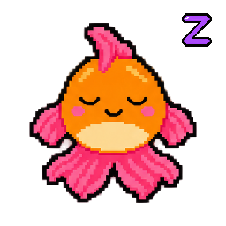
More details
- How it works
- The nine moods, three to a row. The mood GitHub Goldfish is in now lights up, and the pet at the top shows it. When GitHub Goldfish has something to tell you (alarmed, sick, curious, worried, happy, sad), it shows that mood here, on the desktop and on every page it is a friend on (the Stream Deck next); otherwise this page is idle, awake while you use it, or sad after two weeks away. Each picture carries its mood’s sticker, the same on every pet, and awake always shows its own drawing.
- Where it comes from
- The hub’s pictures of GitHub Goldfish (art/moods, or its desktop drawings), with the shared stickers stamped on by the build; the lines from the mood key in pets.json. The mood itself: The Farm’s pet-moods, on this PC (its program’s own mood, a key request waiting on you, the Farmer’s round from the past week).
- Your rules
- 2026-10-18: these meanings only, most urgent first; 2026-10-24: nine stickers, the same on every pet, and nothing moves; 2026-11-03: awake shows its own drawing with the twinkles; 2026-11-14: the same mood everywhere (PET-PROGRAM-FRAMEWORK.md, section 3, item 7).
- Not built yet
- Moods from the Police Station; the live site shows no shared mood (it is on this PC only). An awake drawing with open eyes for every real pet waits for your OK on new art. Drawings are drafts unless you approved them.
github-goldfish-clicker-training-panel
- one clickShow the current reminder in a dialog box, like BSOD’s blurb.
planned · its own page is not linked on the System Map yet
- two clicksOpen or close GitHub Aquarium, this page.
works today · its own page is not linked on the System Map yet
- three clicksA tool you assign: none assigned yet.
unassigned · its own page is not linked on the System Map yet
More details
- How it works
- What clicking the desktop pet does. One and two clicks are the same for every pet. From three clicks on, each number of clicks can run one of GitHub Aquarium’s tools (code, no AI).
- Where it comes from
clicksin pets.json.- Your rules
- 2026-10-18: one and two clicks the same for every pet; 2026-10-22: each number of clicks is a pill, like a tool; always on the page (Flash Audit A41) (PET-PROGRAM-FRAMEWORK.md, section 3, item 8).
- Not built yet
- One click’s reminder box; the desktop pet’s click timing checked on this PC.
github-goldfish-friends-list-panel
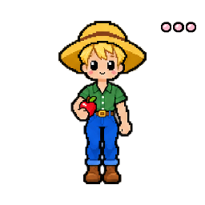
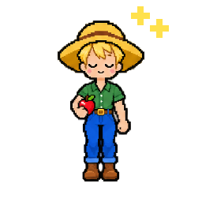

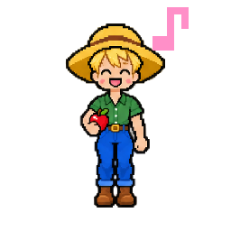


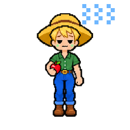

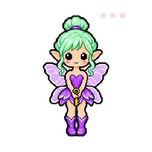

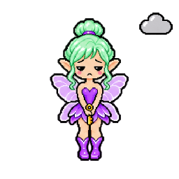
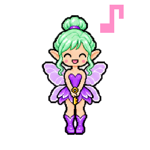
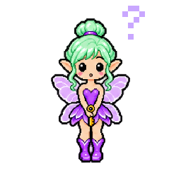
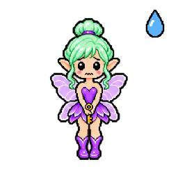

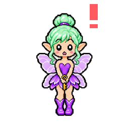

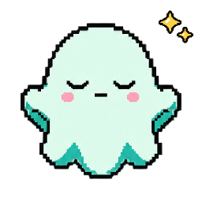
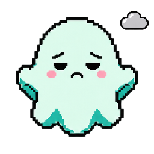


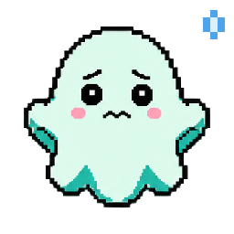
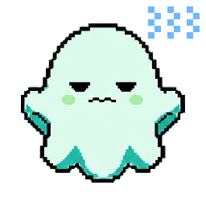
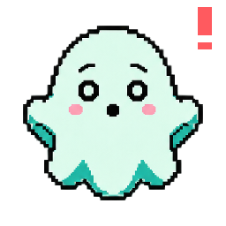
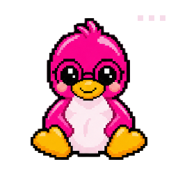


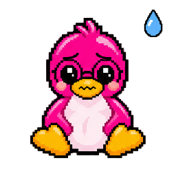
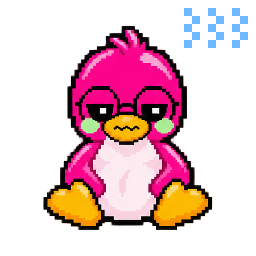
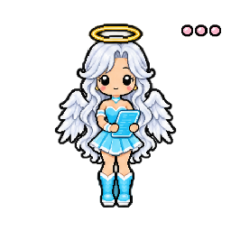


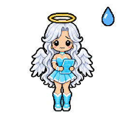

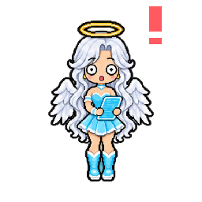


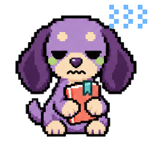

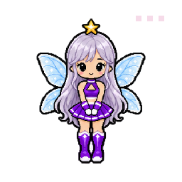


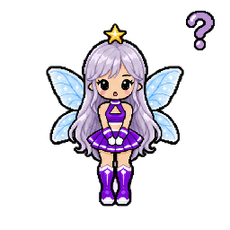


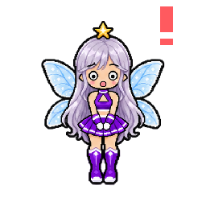

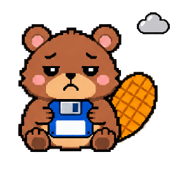

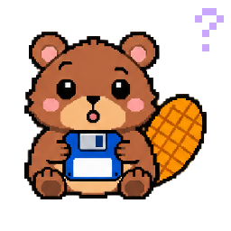
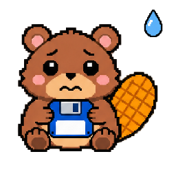
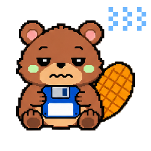
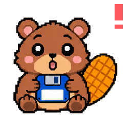
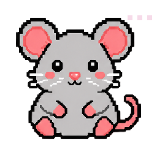

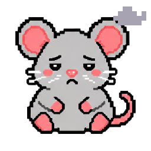
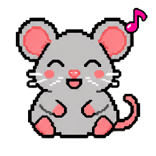
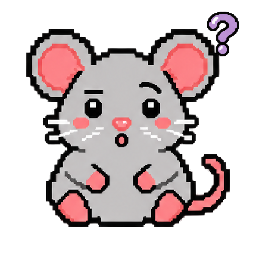


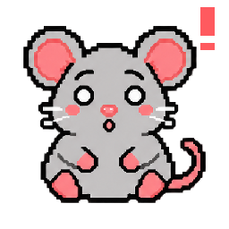
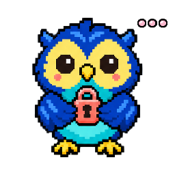
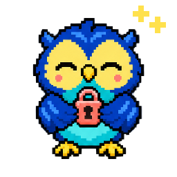
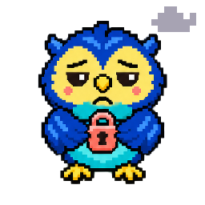
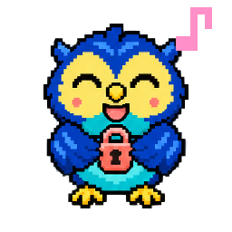
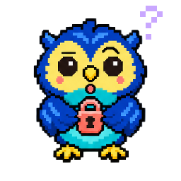

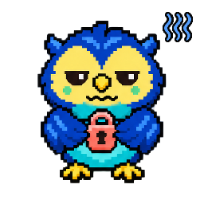
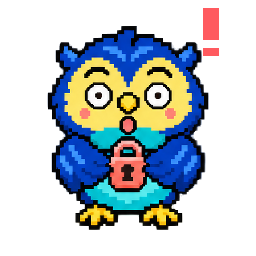

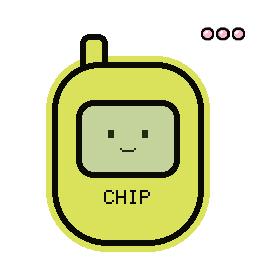


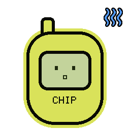


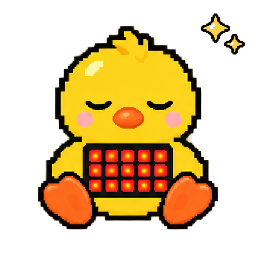


More details
- How it works
- Every pet GitHub Goldfish plays with, hatched or not, most used first. Click one to open its pet program.
- Where it comes from
- The System Map’s links between pets; a
plays_withlist in pets.json sets the order instead. - Your rules
- 2026-10-19: every page lists the pets it plays with at the bottom; 2026-10-22: each speaks in a cloud like the emotions (PET-PROGRAM-FRAMEWORK.md, section 3, item 11).
- Not built yet
- Measuring use: until then the order is the map’s (links that work today, then planned, then ideas; within each, the pet they share the most with).